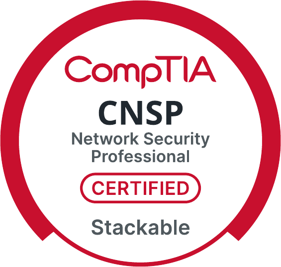
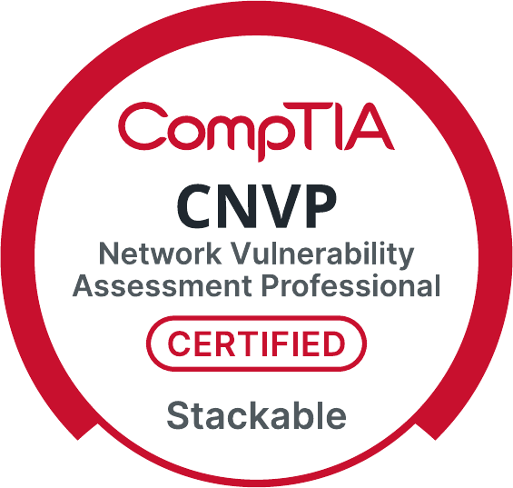
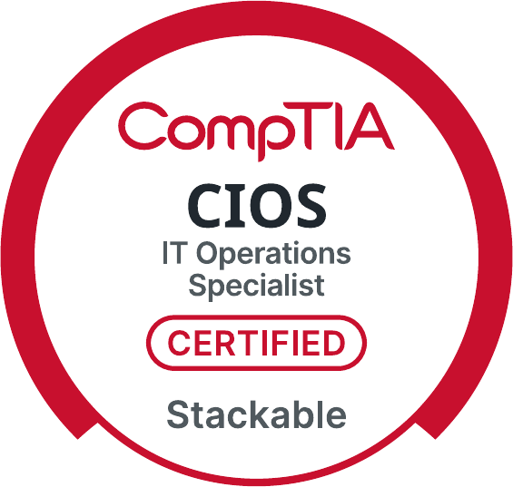
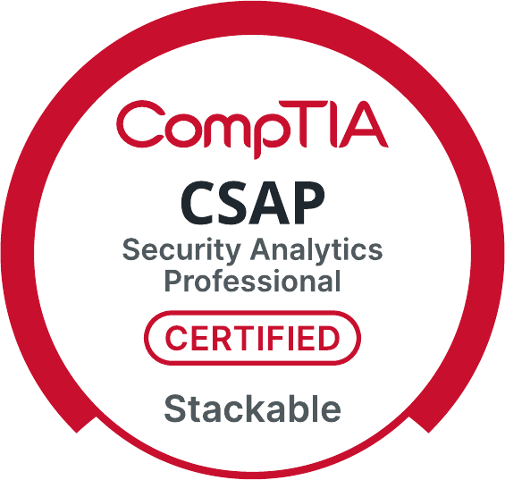
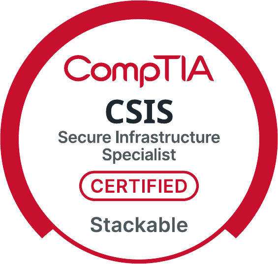

Professional Summary
DevSecOps Engineer with 10+ years securing cloud-native applications across Azure, AWS, and GCP environments supporting government and enterprise workloads. Experienced integrating automated security scanning into CI/CD pipelines, enforcing OWASP-aligned secure coding practices, and strengthening deployment integrity across distributed infrastructure environments. Proven record reducing vulnerabilities, improving remediation timelines, and delivering secure backend architectures supporting thousands of users.
Employment History
Pasco County BOCC — Tampa, FL
- Architected secure enterprise applications supporting county-wide infrastructure serving 5,000+ users
- Implemented JWT authentication and RBAC controls reducing unauthorized access exposure risk by 35%
- Designed reusable REST service layers reducing development lifecycle timelines 25–30%
- Optimized SQL Server performance improving reporting responsiveness by 30%+
Hillsborough County BOCC — Tampa, FL
- Engineered secure workloads across Azure and GCP environments supporting enterprise compliance deployments
- Conducted penetration testing and vulnerability assessments reducing high-risk security findings
- Reduced OWASP Top 10 exposure risks through secure coding enforcement across application environments
- Integrated automated security scanning pipelines reducing manual detection effort by 20%+
Rapid7 — Tampa, FL
- Partnered with engineering teams to remediate backend vulnerabilities across .NET and Python environments
- Supported deployment of security monitoring solutions across hybrid infrastructure environments
- Reduced vulnerability resolution timelines by 20%+ through structured remediation workflows
- Strengthened secure architecture alignment across enterprise deployments
Florida Department of Health — Tampa, FL
- Maintained mission-critical healthcare infrastructure supporting HIPAA-aligned secure environments
- Implemented firewall policies, VLAN segmentation, and routing reducing network attack surface exposure
- Optimized SQL Server environments improving system stability and performance
- Supported endpoint hardening and patch governance improving compliance posture
Military Service
U.S. Navy — USS Juneau LPD-10, Sasebo, Japan | Honorable Discharge
- Served as Communications & Intelligence Specialist (NEC DG-9720) aboard an amphibious transport dock homeported in Sasebo, Japan with 4+ years of sea and foreign service
- Operated and maintained communications and intelligence systems supporting fleet operations in the Pacific and Korean theater
- Completed OS "A" School, June 2001
Awards & Decorations
National Defense Service Medal
Korean Defense Service Medal
Global War on Terrorism Expeditionary Medal
Overseas Service Ribbon
Sea Service Deployment Ribbon (×3)
Education
B.S. Cybersecurity
A.S. Computer Programming & Database Management
A.S. Network Administration
Certifications
Stackable Certifications

Network Security Professional

Network Vulnerability Assessment Professional

IT Operations Specialist

Secure Analytics Professional

Security Analytics Specialist
Individual Certifications
SSCP
CySA+
Security+
PenTest+
PCAP
ITIL V4
A+
Network+
Project+
Skills
CI/CD Pipeline Security
Cloud Security Engineering
OWASP Secure Coding
Vulnerability Management Automation
SAST / DAST Integration
Secure API Design
RBAC / IAM Controls
Infrastructure Hardening
Secrets Management
Compliance Alignment